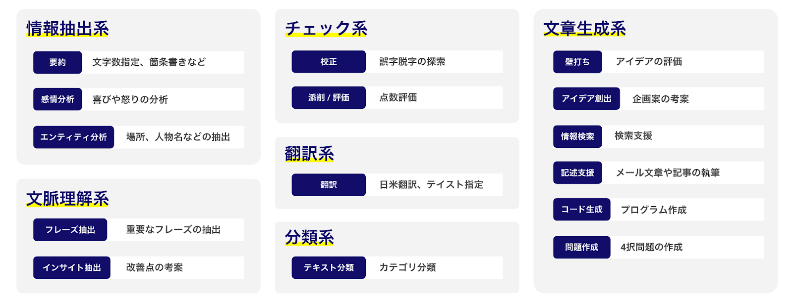

ここからは、テキスト生成AIの代表例であるChatGPTに注目し、効果的に活用するための基本的な考え方や使い方について見ていきましょう。
ChatGPTの強みは、以下のように分類することができます。それぞれの特徴について順に解説します。
情報抽出に関する作業
ChatGPTは、文章の中から特定の情報を探し出す作業を得意としています。たとえば、大量のテキストから指定された日付や人名、地名などを見つけ出すといった、キーワードベースの情報抽出が可能です。
文脈の把握と理解
テキスト全体の流れや前後の関係を踏まえた文脈理解にも優れています。意味や意図を的確に読み取り、背景を加味して重要な情報を特定することができます。
文章のチェック・校正
ChatGPTは文書の誤りを見つけることにも長けています。文法やスペルのミスはもちろん、表現の一貫性やスタイルの違和感なども指摘でき、質の高い文書づくりをサポートします。
翻訳作業への対応
多言語に対応しており、ある言語から別の言語への自然で正確な翻訳が可能です。ニュアンスを保ちながら、異なる言語間での円滑なコミュニケーションを支援します。国際的なやり取りや情報共有に有効です。
テキストの分類
ChatGPTは、テキストを特定のカテゴリに分類する作業も得意です。たとえば、顧客の声をポジティブ・ネガティブ・中立に分類したり、文章のジャンルやトピックを識別するなど、情報の整理や分析に活用できます。
文章の生成
テーマやキーワードをもとに、新たな文章を自動で作成する能力にも秀でています。ストーリーや記事、報告書、メール、広告文など、幅広い形式に対応可能で、業務の効率化やアイデア出しに役立ちます。
事実確認と情報の信頼性
最新情報を検索して提供することは可能になったものの、必ずしも正確性が保証されるわけではありません。誤情報や偏った情報を含む可能性があり、そのまま鵜呑みにすることは危険です。
専門的かつ責任を伴う判断
医療・法律などの高度に専門的な領域において、最終的な判断や助言を担うことはできません。あくまでも補助的な参考情報の提供に留まり、人間の専門家による判断が不可欠です。